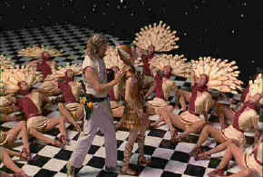
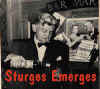
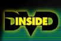

| Big Lebowski/B+,A- |
| Polygram/1998/98m/WS,ANA 1.85 |
The pure inspiration for The Big Lebowski is a Raymond Chandler detective story. The Dude, the chief Lebowski of this twisted movie vision, is the stand-in for Chandler’s detective protagonist Phillip Marlowe, and he does an hilarious job of taking the beatings that the hard-boiled usually endures before solving a case. His adventure begins with physical debasement and ends in a triumph over the darker forces.
 |
|
Bridges admires the goods. ©MGM |
Like The Hudsucker Proxy, the
stylized nod to madcap comedy of the thirties and forties, the Coen Brothers continue to find movie
inspiration from the movies. Theirs is an individual style, a unique point of view that sees
everything from another angle. These guys dare to be different in their filmmaking. Their instincts
may not always be perfect, and they can wander dangerously within in a film, like the strange Sam
Elliot cowboy character that narrates The Big Lebowski and seems to bear no relation
whatsoever tot he story. But why not have a cowpoke with a deep-voice subbing for a fairy godmother
in a film that includes some stunning dream sequences inspired by the musicals of Busby Berkeley.
Jeff Bridges continues to deliver performances so integral to the movies
he’s in that they disappear into the landscape of those films. Bridges’ longhaired, pot-hazed,
Dude is a bigger than life caricature of the sixties dropout. Bridges finds a way to make a
sympathetic portrait, even in this surreal landscape. John Goodman, a veteran of several Coen
Brothers movies, is a terrific sidekick for Bridges. He brings a strange combination of danger and
humor to the shell-shocked Walter. And Julianne Moore leaves an indelible impression as the
somewhat Germanic, positively sado-masochistic daughter of phony financier Jeff Lebowski. There are
some great cameos from performers as diverse as David Thewlis and Ben Gazzara. Maybe it will become
the in thing for actors to do a Coen Brothers film instead of paying homage to the tired films of
Woody Allen.
Roger Deakins moves his camera majestically in delivering another elegant
look to a Coen Brothers film. In contrast to the stark and icy landscape of Fargo, The
Big Lebowski is a delicious bowl of luscious fruit. Carter Burwell’s music continues to
embellish Coen images successfully and production designer Rick Heinrichs pumps the film with great
visual style.
The anamorphic transfer is very posh with a stunning balance of color from
the Deakins camera. The dream segments are simply gorgeous with an assault of contrasting elements
crystallizing with amazing depth. Resolution is first rate with little indication of
over-enhancement. Only the black and white tile elements of the dance sequence seem to ring with
added noise ever so slightly. The music tracks are outstanding and the Dolby Digital 5:1 surround
is clean, with plenty of air around the diverse elements.
Included in the package is a friendly short on the making of The Big
Lebowski primarily featuring the brothers Coen, with smaller segments of Jeff Bridges and John
Goodman. Ethan and Joel Coen explain the origins of the film, laugh at themselves and journalists
alike, and seem to have a good old time doing what they love to do, making movies.

Apocalypse Now is Coppola's distorted vision of war now on DVD in gorgeous anamorphic images.

Tucker: The Man and His Dream is beautifully filmed with loving attention to detail.

Selections from the feature archive include articles on Akira Kurosawa,
Frank Darabont, Blonde Bimbos, Hollywood
Street Gangs, or Vietnam:
The Hollywood Pariah, and many more....
Sturges Emerges 
Preston Sturges was Hollywood's resident comic genius for more than a decade. His movies are
timeless. Click on his image to read all about it.
 Why
do Al Pacino, Gene Hackman, Pat O'Brien and Goldie Hawn fall into a select group of actors? Find
out more by clicking the Hollywood
on the Sidelines symbol.
Why
do Al Pacino, Gene Hackman, Pat O'Brien and Goldie Hawn fall into a select group of actors? Find
out more by clicking the Hollywood
on the Sidelines symbol.

Movie Rage: Death in the Aisles
Everyone knows what it feels like to get angry at the
movies these days. Here's a humorous but not so delightful view of big screen misery.


DVDPlanet is the DVD
incarnation of legendary laser retailer Ken Crane's. Deep discounts and serious service.

Elegant DVD portal with news, reviews, links and information
galore.
Many movie related links in an easy interface. You can even rate
the sites.
Great site for DVD followers. Lots of
information, some speculation, opinion, and reviews all bundled in a sparkling interface.